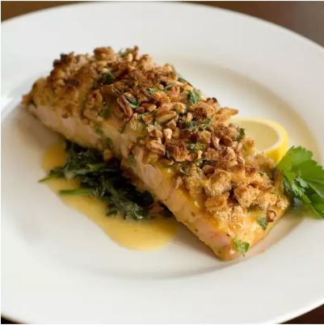

Alaska Salmon

Alaska Salmon Bake with Pecan Crunch Coating
Baked salmon makes an excellent main course!
Ingredients
- 3 tablespoons Dijon mustard
- 3 tablespoons butter, melted
- 5 teaspoons honey
- ½ cup fresh bread crumbs
- ½ cup finely chopped pecans
- 3 teaspoons chopped fresh parsley
- 6 (4 ounce) fillets salmon
- salt and pepper to taste
- 6 lemon wedges
Steps
- Preheat the oven to 400 degrees F (200 degrees C). In a small bowl, mix together the mustard, butter, and honey. In another bowl, mix together the bread crumbs, pecans, and parsley.
- Season each salmon fillet with salt and pepper. Place on a lightly greased baking sheet. Brush with mustard-honey mixture. Cover the top of each fillet with bread crumb mixture.
- Bake for 10 minutes per inch of thickness, measured at thickest part, or until salmon just flakes when tested with a fork. Serve garnished with lemon wedges.